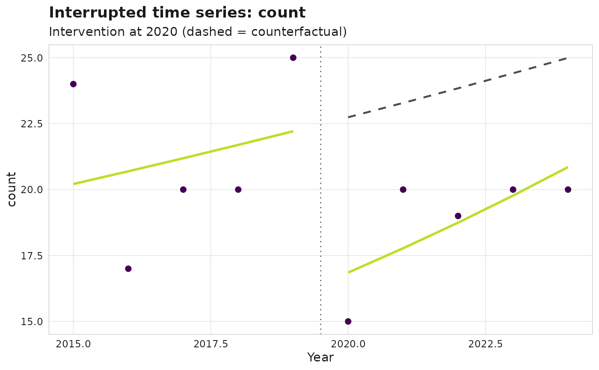

A turnkey interrupted time series (ITS): aggregates the chosen outcome to a
yearly series, fits a segmented regression with a level shift and a slope
change at intervention_year, and derives the counterfactual (the
pre-intervention trend projected forward).
Usage
sm_its(
corpus,
intervention_year,
outcome = c("count", "share_q1", "cnci", "leadership"),
family = NULL,
lag = NULL,
institutions = NULL,
lead_role = c("corresponding", "first", "last", "first_or_last", "any_lead"),
min_cell = NULL,
call = rlang::caller_env()
)
# S3 method for class 'sm_its'
print(x, ...)
# S3 method for class 'sm_its'
summary(object, ...)
# S3 method for class 'sm_its'
autoplot(object, ...)Arguments
- corpus
An
sm_corpus.- intervention_year
Year at which the intervention takes effect: one whole number such as
2020, or text holding one.- outcome
One of
"count","share_q1","cnci","leadership". The expected source columns are:"count"Works per year (uses
works$year)."share_q1"Share of Q1-journal works among the works with a quartile; needs a journal-quartile column on
works(quartile,jif_quartile, orsjr_quartile)."cnci"Mean field-normalised citation impact per year. Impact is resolved from the first populated of
works$cnci,works$fwci(OpenAlex; seesm_enrich_openalex_impact()), the other impact columnsfnci,rcr,cnci_value,ncs,mncsandfield_citation_ratio, acorpus$metricstable (cnci/fnci/valuekeyed bywork_id), orworks$cited_by_count(from which FNCI is derived viasm_metric_fnci(), withmin_cell). If none is populated, an informative error (classscimapR_no_impact_data) names the columns inspected.sm_metric_summary()(metric = "cnci") resolves impact in the same order, and the result names the source used (impact_source). Works without a finite impact value are left out of the yearly mean."leadership"Share of works led through the author role
lead_role(by default the corresponding author,authorships$is_corresponding), by one ofinstitutionswhen they are given; see Details.
- family
Optional GLM family (a
familyobject, generator function, or name). Defaults to Poisson for"count"and Gaussian otherwise; document your choice when overriding. A Poisson fit warns when the counts are overdispersed;"quasipoisson"then scales the standard errors.- lag
Citation-maturity lag in years (default
2). For citation-based outcomes ("cnci"), the most recentlagyears are citation-immature and are excluded from the fit; this is reported in the print method.- institutions
For
outcome = "leadership":NULL(default) or a character vector of focal institution labels. A work then counts as led when an authorship in the rolelead_rolebelongs to one of them, that is when itsinstitution_match,institution_nameorinstitution_id, or the name of that id incorpus$institutions, is one of the labels (runsm_affiliation_match()first). A label that no authorship carries gives a warning naming the nearest labels; when none is found,sm_its()aborts.- lead_role
For
outcome = "leadership": the author role that leads a work."corresponding"(default) is an author withis_corresponding = TRUE,"first"and"last"are the authors with the lowest and the highestpositionof the work,"first_or_last"either, and"any_lead"the first, last or corresponding author. Roles other than"corresponding"needinstitutions.- min_cell
For
outcome = "cnci":NULL(default) or a positive integer, passed tosm_metric_fnci()when the impact is derived fromworks$cited_by_count, so that works in field-year cells with fewer works fall back to larger baselines. Not used when the corpus carries stored impact values.- call
Caller environment for error reporting.
- x
An
sm_itsobject.- ...
Ignored.
- object
An
sm_itsobject.
Value
An sm_its S3 object with components: model (the fitted glm),
coefficients (tidy tibble: term, estimate, std.error, conf.low,
conf.high, statistic, p.value), series (tibble: year,
observed, fitted, counterfactual), and metadata (outcome,
intervention_year, family, lag, provisional_years,
dropped_years, leadership). dropped_years (integer) lists the
years left out for lack of a usable value, provisional_years
(integer) the citation-immature years excluded after them.
leadership holds the definition used for outcome = "leadership", a
list of lead_role, institution_aware (FALSE), institutions
(the focal labels or NULL) and label_column (the column that
labels the institutions of the corpus, institution_match,
institution_name or institution_id, the first with a value; NA
without institutions), and is NULL for the other outcomes.
impact_source (character) names where the impact values of
outcome = "cnci" come from, such as "works$fwci (OpenAlex)" or
"works$cited_by_count (field-normalised)"; NA for the other
outcomes.
print returns x invisibly.
summary returns the tidy coefficient tibble.
autoplot returns a ggplot.
Details
The yearly series is built first. For "count" it runs over every year
from the first to the last publication year of the corpus, and a year
without works counts 0, so filter the corpus to the analysis window
beforehand. For the other outcomes a year with works but no usable value
is dropped with a warning and listed in dropped_years: no work of the
year has a journal quartile ("share_q1") or a finite impact value
("cnci"). For "cnci" the citation-immature years are excluded after
that and listed in provisional_years, so no year is in both.
For "leadership" the share of a year is over the works whose lead is
known, and that number of works weights the year in the fit. A work
whose authorships all have is_corresponding = NA (unknown, as the
readers of sources without corresponding-author data record it; see
sm_corpus()) leaves the denominator for
lead_role = "corresponding", with or without institutions; up to
scimapR 0.4.0 it counted as not led. So does a work without
authorships, and for the position roles a work whose positions are all
NA. For "any_lead" an unknown corresponding author counts as not
leading, so the work stays in the denominator. A year in which no work
has a known lead is dropped with a warning, and sm_its() aborts when
no work has one. With institutions the denominator is every work of
the year with a known lead, not only the works with an authorship at
the focal institutions.
A focal label is compared with every label column of an authorship row
(institution_match, institution_name, institution_id and the name
of that id), as group membership in sm_did() and sm_synth() is, so
a row with institution_match "A" and institution_name "B" belongs to
both "A" and "B". sm_count() instead labels each row by the first of
these columns with a value. The print method names the column that
labels the institutions of the corpus (leadership$label_column).
At least 4 years must remain after these exclusions, with 2 or more before
intervention_year and 2 or more from it on, so that the pre-trend, the
level change and the slope change can all be estimated; otherwise
sm_its() aborts. With only 4 years the 4 coefficients fit the series
exactly: a family that estimates its dispersion (Gaussian, quasi
families) then has no residual degrees of freedom, so its standard
errors, intervals and p-values are NaN and sm_its() warns. Families
that fix the dispersion, such as the Poisson default for "count", keep
their standard errors.
The confidence intervals are Wald intervals on the reference distribution of the p-values: t with the residual degrees of freedom when the family estimates its dispersion (Gaussian and quasi families), normal when the family fixes it (Poisson, binomial). The standard errors treat the yearly values as independent; no correction for autocorrelation is applied.
See also
sm_did(), sm_citation_maturity()
Other causal:
sm_did(),
sm_synth()
Examples
corpus <- sm_example_corpus(n_works = 200, seed = 1)
its <- sm_its(corpus, intervention_year = 2020, outcome = "count")
its
#>
#> ── <sm_its> ────────────────────────────────────────────────────────────────────
#> Outcome: count Family: poisson
#> Intervention year: 2020
#>
#>
#> ── Segmented regression coefficients
#> Baseline level: 3.0063 [2.6712, 3.3413] (p = <2e-16)
#> Pre-trend (slope): 0.0236 [-0.1111, 0.1583] (p = 0.73)
#> Level change: -0.2997 [-0.8709, 0.2714] (p = 0.3)
#> Slope change: 0.0297 [-0.1669, 0.2262] (p = 0.77)
# \donttest{
ggplot2::autoplot(its)

# }
# share of works whose corresponding author is at a focal unit
fix <- readRDS(sm_example_files("example_realuse_corpus.rds"))
dict <- readr::read_csv(
sm_example_files("example_realuse_affiliation_dict.csv"),
col_types = "ccc"
)
fix <- sm_affiliation_match(fix, dict)
#> ✔ Affiliation matching flagged 427 authorships across 4 institutions.
#> ℹ By signal: name_token: 427. See `sm_affiliation_summary()` for the full
#> breakdown.
lead <- sm_its(fix, intervention_year = 2021, outcome = "leadership",
institutions = "Armed Forces Hospital Northtown")
lead$series
#> # A tibble: 11 × 4
#> year observed fitted counterfactual
#> <int> <dbl> <dbl> <dbl>
#> 1 2016 0 0.136 0.136
#> 2 2017 0 0.161 0.161
#> 3 2018 0.25 0.186 0.186
#> 4 2019 0.25 0.211 0.211
#> 5 2020 0.2 0.236 0.236
#> 6 2021 0.222 0.192 0.261
#> 7 2022 0.15 0.198 0.286
#> 8 2023 0.182 0.203 0.311
#> 9 2024 0.273 0.209 0.336
#> 10 2025 0.2 0.215 0.361
#> 11 2026 0.2 0.221 0.386